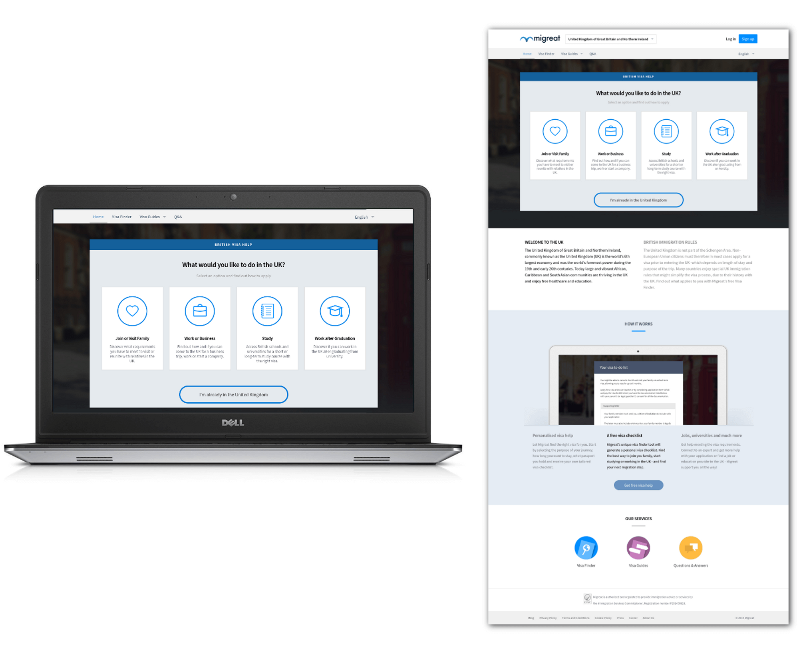
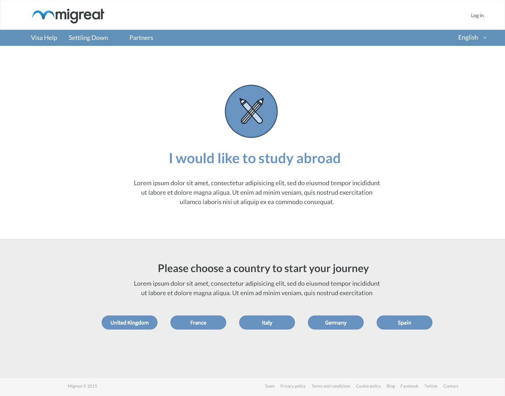
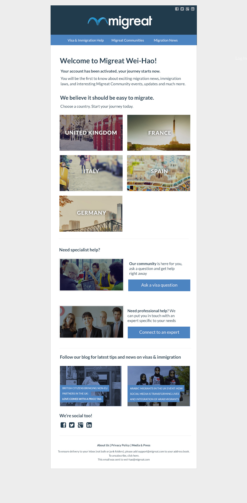
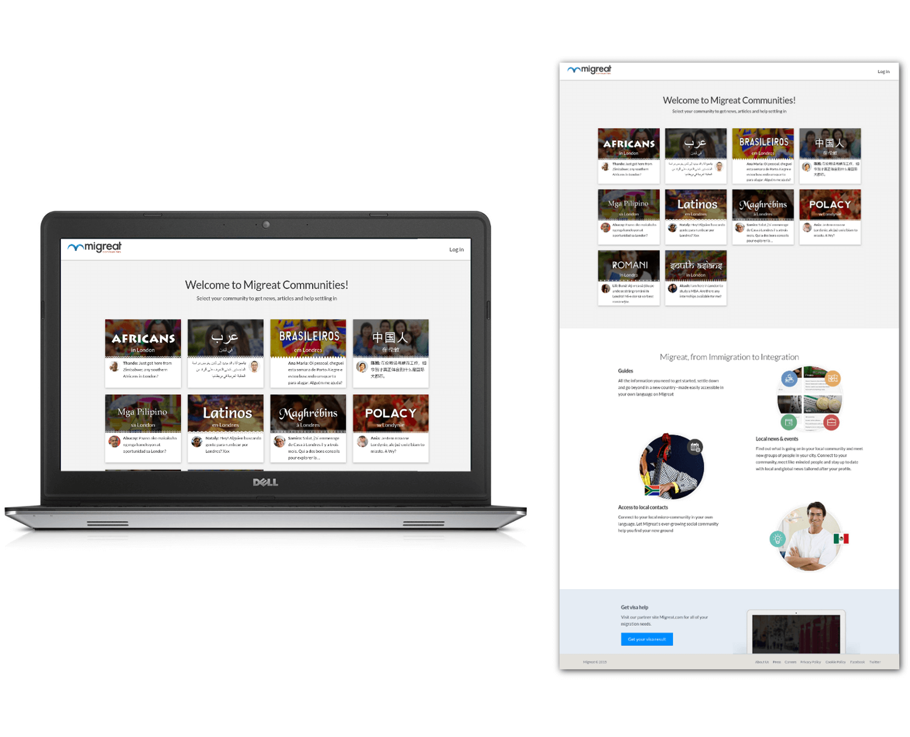
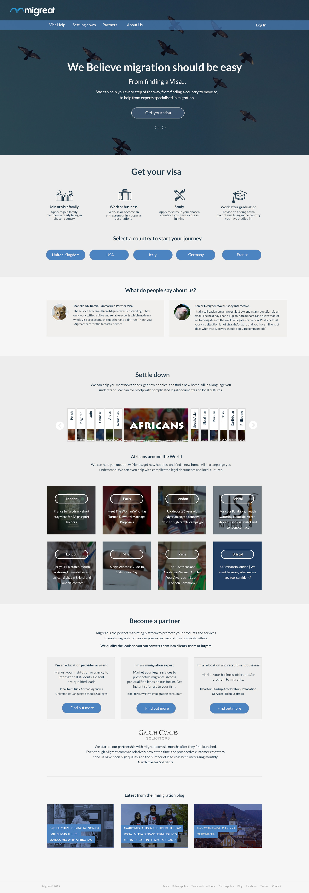
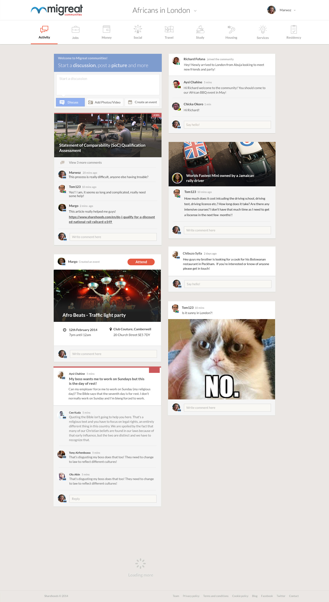
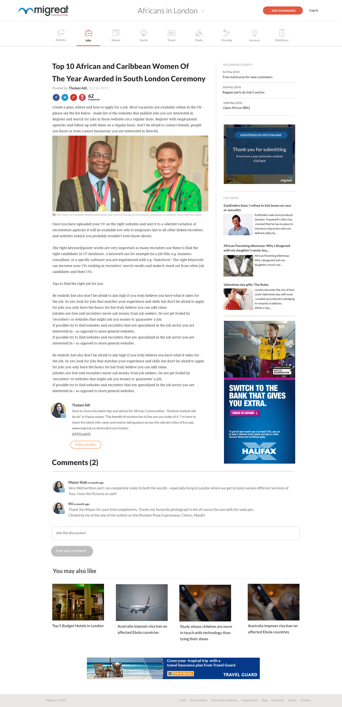
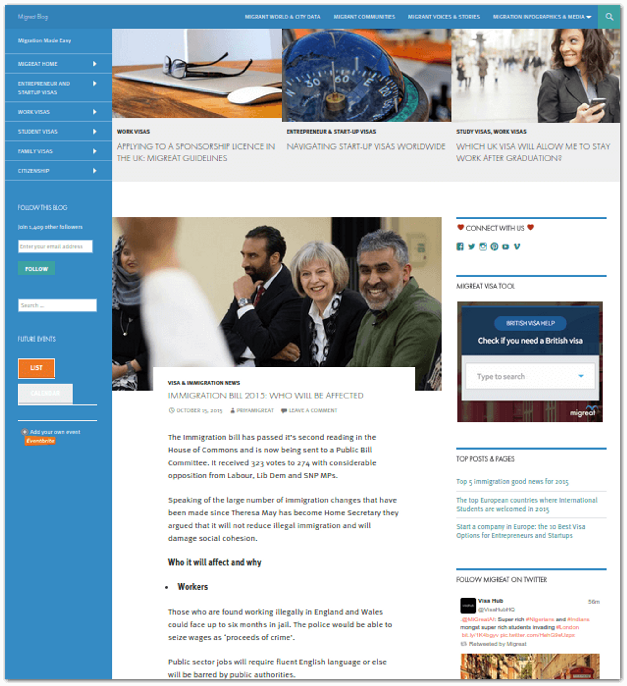

migreat platform
The online platform dedicated to democratising visa & local information for migrants before and after the move
Project overview
About the project
Over one billion people are estimated to migrate in the next five years, navigating expensive and complex immigration processes. Immigration is a sensitive topic, especially in countries experiencing high influxes of newcomers. Political pressure often mounts to control immigration and protect resources. However, migrants who successfully integrate into their receiving societies can make valuable contributions—boosting the local economy, filling critical skill shortages, and driving technological progress.
Migreat helps migrants navigate proper immigration channels, providing opportunities for full integration into their new communities. The team offers expert legal advice and tailored information for various needs: students accessing higher education, families reuniting with loved ones, and individuals seeking employment that matches their skills.
For the first time, migrants receive affordable and effective assistance with complex immigration regulations.
My role
As the company's UX Engineer, I led the design and front-end development process for Migreat's web products, from initial whiteboard concepts to Balsamiq wireframes and HTML/CSS prototypes.
Tools
Platform(s): Web, iOS, Android
Supported Languages: The website is available in 9 languages—requiring careful consideration for right-to-left text display.
Responsiveness: With most Migreat users accessing via mobile devices, all designs followed a mobile-first approach.
Tools & methodologies: Agile/Scrum, Atlassian (Jira), GitHub, Adobe Illustrator
Visa Finder Application Wizard
Our team streamlined visa bureaucracy by creating an intuitive interface for navigating complex immigration rules. We aimed to simplify the tedious process and clarify information on visas, jobs, and study opportunities across countries. The user-friendly online platform—a stark contrast to typical visa-related experiences—is personalised for each user. An algorithm generates a customised to-do list for every step of the visa application process, providing accurate, up-to-date information tailored to each unique situation.
With Migreat, users can quickly discover the necessary steps and costs for obtaining a visa to a specific country, enabling informed decisions about their destination. They can create a free, personalised visa to-do list, connect with a lawyer, and receive genuine answers to their migration-related questions from real people on the platform.
  Communities Website
In addition to the wizard, the communities website serves as a trusted community resource created by foreign nationals. It caters to those seeking to explore, access, and share contacts, places, and social tips about their new home. The platform aims to provide a space where both prospective and current immigrants can build their new lives, forge social connections, and expand their networks—all accessible via web or mobile devices.
   Migreat Blog
From immigration to integration, users can find all the latest news.
Learnings
Adapting to complex, multi-language design challenges: Our team had to learn to design for a diverse, international audience, including considerations for right-to-left languages. This significant experience pushed us to think globally and consider cultural nuances in our design and implementation approach.
Implementing a mobile-first approach: With most Migreat users accessing via mobile devices, our team had to prioritise mobile design and functionality. For a young startup in 2014, this forward-thinking approach was cutting-edge, requiring us to adapt our design and development processes to ensure optimal user experience on smaller screens.
What I would have done differently
And on a personal note, if I were to revisit my role as Migreat's designer, I'd prioritise a more comprehensive user research and testing phase. This would focus on our diverse user base across various cultures and languages. While we successfully tackled multi-language design challenges and embraced a mobile-first approach, a more thorough user research process could have yielded deeper insights into the specific needs and pain points of migrants from different backgrounds.
This additional research could have potentially led to:
- More tailored user experiences for different cultural groups
- Better understanding of language-specific challenges in the visa application process
- Improved localisation strategies beyond mere translation
- More effective community-building features based on cultural norms and expectations
With more extensive user research early on, we could have potentially developed a platform that was even more user-centric and culturally sensitive. This approach would have further enhanced Migreat's ability to democratise visa and local information for migrants.